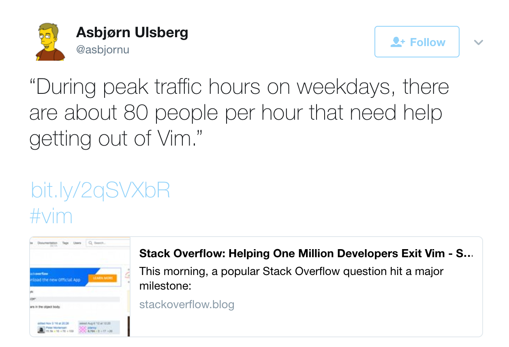

Get Better With All Things Git
Asbjørn Ulsberg
Hello, I'm Asbjørn Ulsberg and that's me in the corner.
I do not contribute to the source code of Git and
there can be written encyclopedias on what I don't
know about Git.
But I believe it's possible to become a better
developer by understanding some fundamentals about
how Git works and not being afraid to experiment.
I contribute to GitVersion and a lot of other
open source projects on GitHub and elsewhere.
There's a lot of myths about Git and to some it appears
so difficult and complex that you need a PHD to
understand it.
Chemistry illustraion
However, Git gets easier once you get the basic idea that
branches are homeomorphic endofunctors mapping submanifolds
of a Hilbert space.
Git
DAG
Just kidding. Git is just a DAG.
Git
Directed Acyclic Graph
Also known as a Directed Acyclic Graph.
If you're still scratching your head, let's go back to
school and 3rd grade maths.
A graph consists of edges (or arcs).
And nodes (or vertices).
If a graph has no direction, we call it undirected.
And, if it goes in a circle, we call it cyclic.
To make the graph acyclic, we need to remove an edge.
And to indicate direction, we can add some arrows.
We now have a Directed Acyclic Graph. A DAG.
A DAG is the simplest form of a graph.
Its edges points in one direction, making it directional.
Its edges will never form a circle, making it acyclic.
All nodes have edges that eventually point to the same node.
If we give our nodes names.
And then some labels pointing to them, we basically
have everything you need to visualize in your head
when working with Git.
To be more Git-specific, the nodes represents commits.
And the labels represents references.
Commits
The delta from the previous (or parent) commit
Merge commits has at least two parents, octopus merges can have more.
The ID of a commit makes merges and comparisons in Git both extremely fast and somewhat stupid
const char *
sha1 (content,
author,
date,
message,
parent_sha1);
// 7ecd1598a3e6bb7c3c0d7cbda24e7dc
References
Local branch referenceRemote branch referenceTag referenceJust a 40 byte file on disk
Local branch references are specific to your local repository.
Remote branch references are specific to a remote repository.
These do not have to match, but usually they do.
Tag references are like branch references,
only immutable.
After a tag has been created it will never
change.
You can, however delete it and create a new
tag with the same name, pointing at another
commit.
Tags therefore work well to indicate version
numbers and other reminders about what a
given commit actually means.
References are basically just 40 byte files on disk,
whose name is the name of the reference and content
is the commit ID of the commit it is pointing to.
As we will see later, since Git maintains a
cryptographically verifiable graph of its commits,
it makes branching and merging much simpler.
Other version control systems like TFVS and Subversion,
don't store the commit history like graphs, though.
They store them more like a stack of pancakes.
And while pancakes are great and even branching
a stack of pancakes usually is problem free,
the problem arises once you try to merge the stacks
of pancakes.
Often, you end up in an epic fail situation like this.
Pancake fail
add
am
annotate
apply
archimport
archive
bisect
blame
branch
bundle
cat-file
check-attr
check-ignore
check-mailmap
check-ref-format
checkout
checkout-index
cherry
cherry-pick
citool
clean
clone
column
commit
commit-tree
config
count-objects
credential
credential-cache
credential-store
cvsexportcommit
cvsimport
cvsserver
daemon
describe
diff
diff-files
diff-index
diff-tree
difftool
fast-export
fast-import
fetch
fetch-pack
filter-branch
fmt-merge-msg
for-each-ref
format-patch
fsck
gc
get-tar-commit-id
gitk
gitweb
grep
gui
hash-object
help
http-backend
http-fetch
http-push
imap-send
index-pack
init
instaweb
interpret-trailers
log
ls-files
ls-remote
ls-tree
mailinfo
mailsplit
merge
merge-base
merge-file
merge-index
merge-one-file
merge-tree
mergetool
mktag
mktree
mv
name-rev
notes
p4
pack-objects
pack-redundant
pack-refs
parse-remote
patch-id
prune
prune-packed
pull
push
quiltimport
read-tree
rebase
receive-pack
reflog
relink
remote
repack
replace
request-pull
rerere
reset
rev-list
rev-parse
revert
rm
send-email
send-pack
sh-i18n
sh-setup
shell
shortlog
show
show-branch
show-index
show-ref
stash
status
stripspace
submodule
svn
symbolic-ref
tag
unpack-file
unpack-objects
update-index
update-ref
update-server-info
upload-archive
upload-pack
var
verify-commit
verify-pack
verify-tag
whatchanged
worktree
write-tree
These are the 150 or so commands Git supports. Add
arguments to the mix and you have an infinate amount
of combinations.
Commands can be split in two groups:
Porcelain commands
And plumbing commands
The difference between the two are that porcelain
commands are usually higher level, are often composed
of several plumbing commands and have a more stable
interface.
Most daily use of Git only involves less than 20
different commands, though.
Due to the amount of commands in Git, comedy sites like
this have been created, which undeniably are very funny.
git-jerk-remote
Terminal
Pick a good terminal
Learn to use the terminal and start to love it. With Windows
being bundled with Bash these days and PowerShell having
functionality that shock -- is not possible to do in a GUI --
there is no way to avoid the shell anymore.
DEC VT100 Terminal photo credit to Wikipedia
Terminal
Configure it
Learn to love it
Make it your own
Find a set of conventions, dotfiles, etc. that suit you.
Make it your own.
Package Manager
Find a good package manager for your OS of choice.
Linux: the one you already have is probably good enough./
Install
choco install git.install
brew install git
apt-get install git
Configure
Who are you, really?
# Is a user name configured?
git config --global user.name
# If not, configure a user name
git config --global user.name "Asbjørn Ulsberg"
# Is an e-mail address configured?
git config --global user.email
# If not, configure an e-mail address
git config --global user.email asbjorn.ulsberg@payex.com
First see if you've configured git already
If you haven't, configure a name and an e-mail
address.
Configure
Editor Wars: Commence!
git config --global core.editor notepad
git config --global core.editor atom
git config --global core.editor emacs
Configure

Since vim is the default editor, this avoids problems like these.
Configure
Change identity depending on where you are
[user]
name = Asbjørn Ulsberg
email = asbjorn.ulsberg@payex.com
[includeIf "gitdir:~/projects/personal/"]
path = ~/.gitconfig.oss
# inside .gitconfig.oss:
[user]
email = asbjorn@ulsberg.com
Configure
SSH provides max efficiency, security and flexibility
# Lists the files in your .ssh directory, if they exist:
ls -al ~/.ssh
# If not, generate a keypair
ssh-keygen -t rsa -b 4096 -C "asbjorn.ulsberg@payex.com"
# Complete the interactive key generation wizard.
# Then add the key to the SSH agent.
eval $(ssh-agent -s)
ssh-add ~/.ssh/id_rsa
# Copy the contents of the id_rsa.pub file:
cat ~/.ssh/id_rsa.pub
Lastly, add the public key to your GitHub account